01 / Первый график
Звуковой ландшафт цунами
Сонификация архивных измерений. Изменения числового ряда становятся изменениями звука.
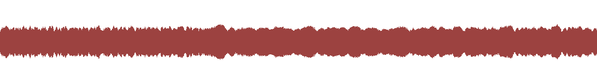
0:003:00
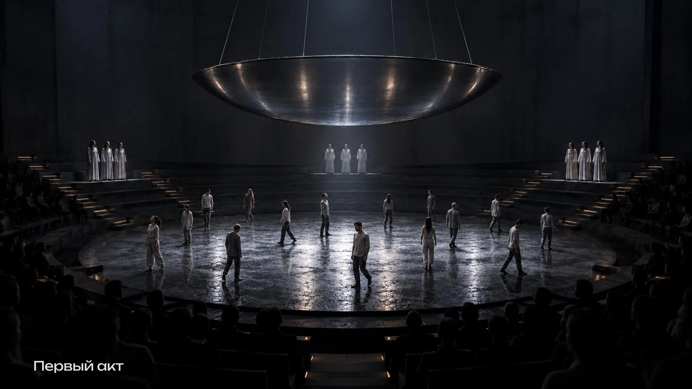
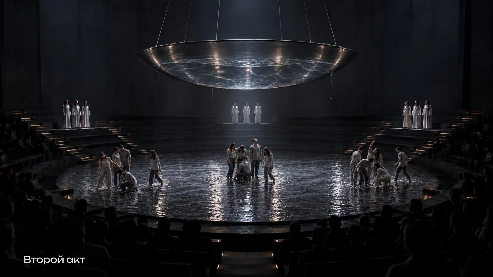
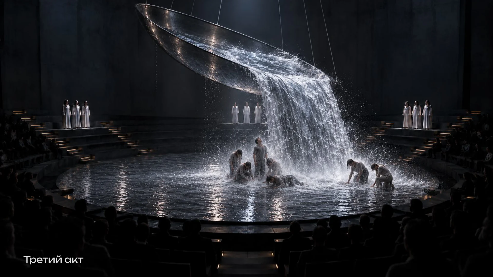
Художественный контекст
Вода как материал. Данные как партитура. Движение как способ прочитать мир.
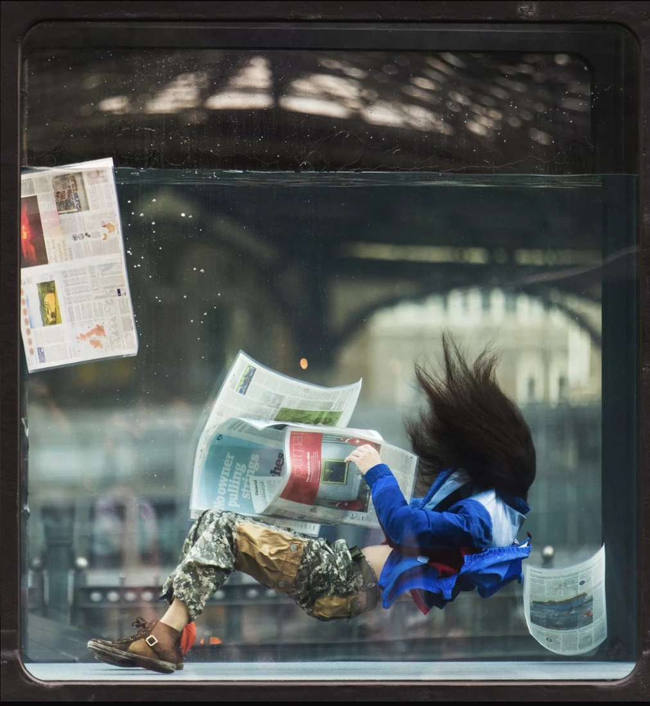
01Повседневные действия исполнителей продолжаются в резервуаре, который наполняется и опустошается.
Вода как действующая среда, меняющая поведение.
ПодробнееИзображение из презентации команды.
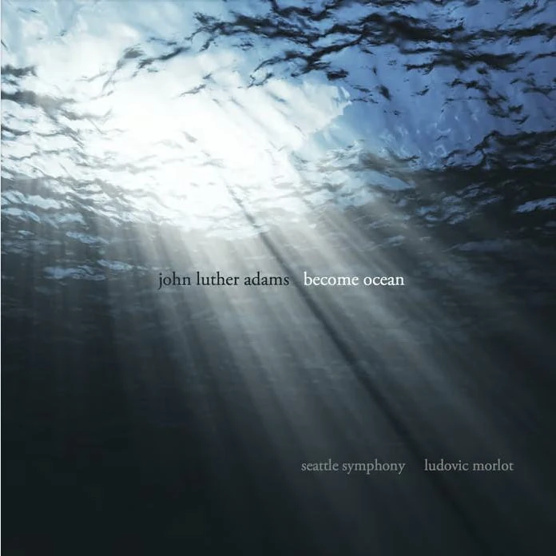
02Оркестровое произведение создаёт протяжённое, меняющееся звуковое пространство океана.
Длительность, нарастание и погружение в звук.
ПодробнееИзображение из презентации команды.
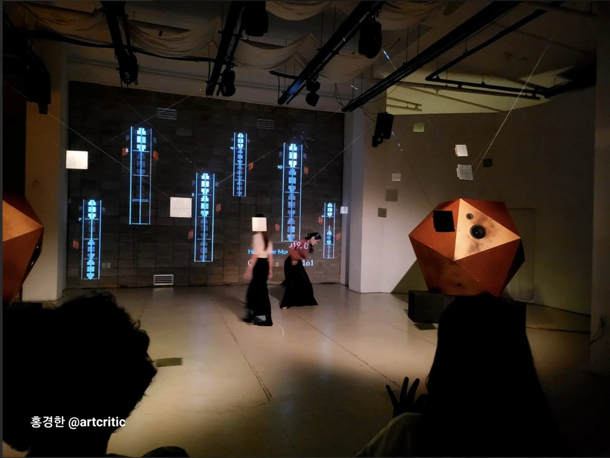
03Исследовательский проект связывает танцевальный язык пчёл, символы лабанотации и цифровую среду.
Перевод природного процесса в систему записи движения.
ПодробнееИзображение из презентации команды; ссылка ведёт в исследовательский архив.
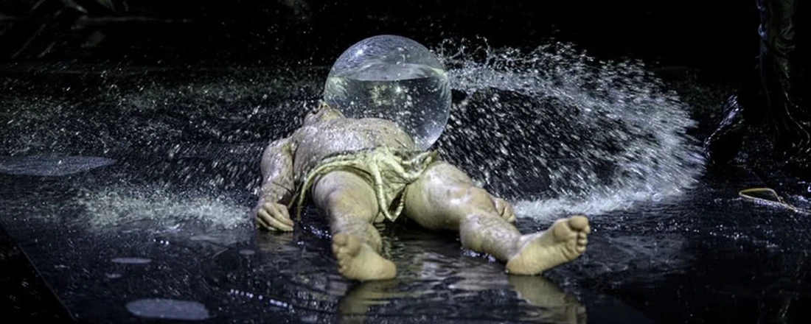
04Пластический дуэт о притяжении и противостоянии, в котором вода становится частью сценического действия.
Взаимодействие исполнителя с реальной водой.
ПодробнееИзображение из презентации команды.
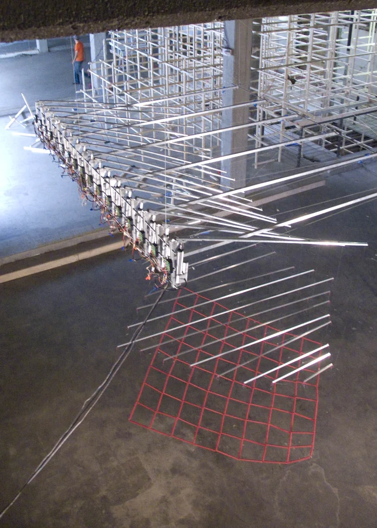
05Данные океанского буя управляют механической сеткой: удалённое движение волн становится физическим движением объекта.
Прозрачная связь измерения и материального действия.
ПодробнееИсточник изображения: сайт David Bowen.
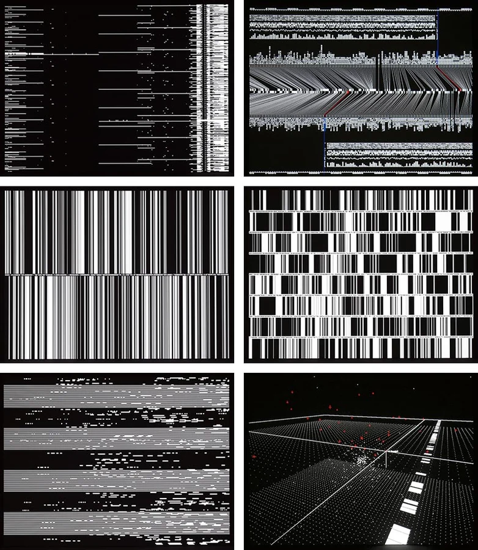
06Данные становятся материалом для звука и изображения в серии аудиовизуальных работ.
Данные как основа воспринимаемой композиции.
ПодробнееФото: Ryuichi Maruo; courtesy of YCAM. Источник: Ryoji Ikeda.
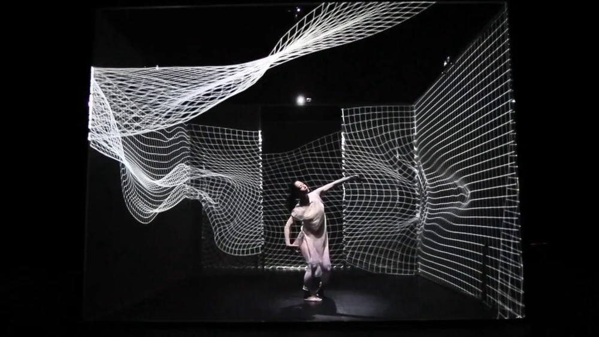
07Танцовщица ведёт диалог с меняющимся цифровым пространством, проецируемым на прозрачные стены.
Хореография и среда как единое действие.
ПодробнееИсточник изображения: архив Romaeuropa Festival.
Продолжим разговор
О проекте, сотрудничестве, мастерской или будущем показе.